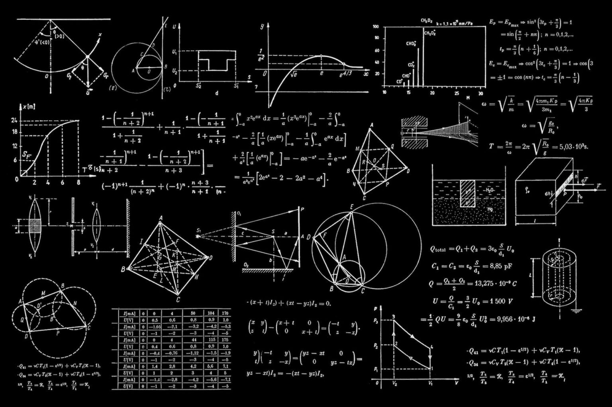

01
Desarrollo de Software
El desarrollo de software es el proceso integral de concebir, diseñar, programar, probar y mantener programas, aplicaciones o sistemas informáticos.
Conocer más →Proyecto de orientación académica
Descubre tus intereses, reconoce tus habilidades y conoce las oportunidades que existen antes de elegir tu especialización.
Conoce por qué es importante pensar antes de escoger una especialización o carrera.
Conoce las especializaciones ofertadas por la institución.
Conoce las diferentes opciones que ofrece nuestra institución y descubre cuál se relaciona mejor con tus intereses.
El desarrollo de software es el proceso integral de concebir, diseñar, programar, probar y mantener programas, aplicaciones o sistemas informáticos.
Conocer más →Es un programa técnico enfocado en enseñar a los estudiantes cómo administrar, registrar y controlar el dinero de una empresa o emprendimiento.
Conocer más →Es un programa académico enfocado en el estudio profundo de la naturaleza, la materia, la vida y los fenómenos físicos.
Conocer más →Pensar bien antes de elegir tu especialización de bachillerato o carrera universitaria evita que malgastes años de estudio en algo que no te apasiona. Esta decisión marca el inicio de tu ruta laboral, afecta tu economía y define en qué tareas pasarás la mayor parte de tu día en el futuro.
Una de las decisiones más importantes que tomamos en la vida es la elección de nuestra carrera profesional. Esta decisión suele ser una de las más difíciles y también una de las que causa más incertidumbre. Generalmente, muchos esperan casi hasta el último momento para decidirse y, durante todo ese tiempo de espera, son bombardeados por múltiples opiniones de amigos, familiares y conocidos sobre lo que deberían estudiar.
Es muy importante contar con toda la información y las herramientas necesarias para tomar una decisión bien analizada y fundamentada.
A continuación te ofrecemos algunos consejos para que puedas decidir qué especialización se adapta mejor a ti.
Piensa en las materias que te gustan, los temas que más llaman tu atención y las actividades que haces con entusiasmo.
Algunos ejemplos:
Si te gustan la tecnología, las computadoras y los juegos de lógica.
Si te gustan los negocios, la administración, la comunicación y la lectura.
Si te gustan la biología, anatomía, ciencias y experimentos.
Aquí es importante reconocer las fortalezas y las actividades en las que tenemos facilidad. Las habilidades pueden ayudarte mucho a escoger una especialización adecuada a lo que sabes hacer.
Elegir una especialización basándose en lo que ya sabes hacer, es decir, tus habilidades y competencias actuales, puede ayudarte a desarrollar mayor seguridad profesional. Mientras que el gusto te da la motivación, el "saber hacer" te proporciona una herramienta para ejecutar el trabajo.
Aprender algo desde cero cuando no se tiene una habilidad desarrollada puede requerir más tiempo y esfuerzo.
Si un estudiante ya es bueno resolviendo problemas lógicos, programar o calcular puede resultarle más natural. Construir sobre una base que ya domina puede aumentar su confianza y ayudarlo a enfrentar mejor el nivel académico de la especialización.
El "saber hacer" se traduce directamente en un producto o servicio valioso. Si sabes diseñar, programar, reparar motores o redactar con claridad, tienes una habilidad que puede desarrollarse profesionalmente.
Muchos jóvenes tienen talentos naturales que dan por sentados: saben negociar, tienen buen oído musical o desarman aparatos con facilidad. La especialización toma ese talento y le da estructura, teoría y técnicas avanzadas.
Si un estudiante elige su especialización mirando solo uno de los dos lados, la decisión queda incompleta y puede generar dificultades a futuro.
Puede fascinarte la robótica, pero si tienes dificultades con la lógica matemática y la programación, podrías encontrar mayores retos durante tu formación.

MatemáticasAntes de elegir, investiga qué aprenderás en cada especialización, qué materias incluye y qué oportunidades puedes encontrar después del bachillerato.
¿Qué materias tiene?
¿Qué aprenderás?
¿Qué puedes estudiar?
¿En qué puedes trabajar?